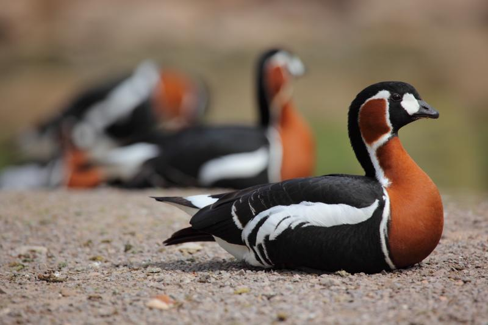

Gasca cu gat rosu
In Romania
Habitatul lor a suferit schimbari inca din perioada anilor 1950, ceea ce le-a alterat obiceiurile de migratie. Majoritatea populatiei de 55.000 de exemplare din toata lumea ierneaza in zona de coasta a Romaniei si Bulgariei
Descriere
Gâsca cu gât roșu este cea mai mică dintre speciile de gâște europene şi are un penaj elegant, negru combinat cu roșu-castaniu, subliniat de dungi albe. Sexele au înfățișare similară. În zbor se observă gâtul scurt și coloritul negru complet sub aripi. Lungimea corpului este de 54-60 cm şi are o greutate medie de 1400-1625 g. Anvergura aripilor este cuprinsă între 110-125 cm.
În teritoriile de cuibărire se hrănește cu specii vegetale din tundra siberiană, iar în cartierele de iernare din sud-estul Europei în special cu materiale vegetale de pe culturile agricole. La început se hrănesc cu boabe de porumb rămase risipite după recoltare (când sunt disponibile) şi mai apoi cu frunzele răsărite ale grâului de toamnă și ale rapiței.
| Caracteristi genereale | |
|---|---|
 |
Populatie in lume |
| 55.000 | |
 |
Inaltime |
| 30cm | |
 |
Greutate |
| 1.5 kg | |
 |
Habitat |
| Tundra Siberiei si zona Mării Negre | |
| Mai multe detali aici | |